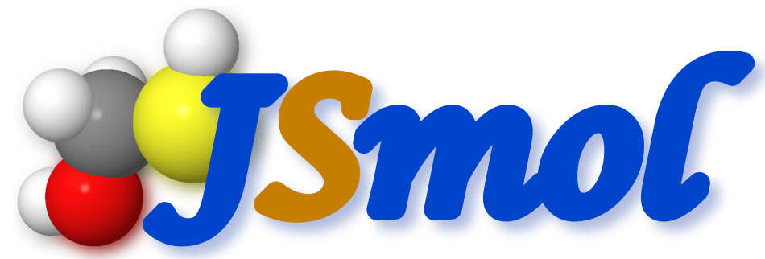
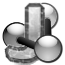

User guide¶
Loading structures¶
Import the two structures you want to align by clicking the green load buttons in the import-tab. The "fixed" structure is the reference structure and the "rotating" structure is the structure whose rotation is going to be changed after the alignment. ZEAL allows structures to be loaded from pdb files, or to be downloaded directly from the PDB server - use the load-fetch switch to change between the modes.
Shape-alignment¶
In the alignment tab there are three modes available for generating a shape alignment:
| Button | Mode | Description |
|---|---|---|
| Global search | Automatic search for the best alignment using a machine learning algorithm called surrogate optimization. The search progress is shown in a new window, showing the best correlation found for each function evaluation. The search can be stopped by clicking stop, otherwise the search will proceed until the stopping criteria is met (default is 300 function evaluations). Clicking on opens a settings window where the stopping criteria can be changed, and the number of random samples used in the surrogate creation phase. | |
| Manual alignment | Interactive alignment by using the mouse to change the orientation of the rotating structure. The new orientation will be the starting point for the Global-search algorithm. | |
| Randomize | Apply a random rotation to the rotating structure. The maximmum change (in Euler angles) can be set by clicking on which will open a settings window. |
After selecting a mode, clicking on will activate it.
Region of interest¶
Sometimes a structure contains a region that you want to ignore for the shape alignment. For such cases, ZEAL allows interactive selection of a region-of-interest (ROI) using JSmol. Defining ROIs for each structure is done in the "Define Region of Interest" tab. Follow these steps to enable shape alignment with a ROI:
-
Select a structure by clicking on rotating/fixed.
-
Click on select. You will first be prompted to save the structure to a pdb-file, and then prompted to load it in JSmol. Once the structure is loaded, click on the button to setup JSmol selection. (In the case that you do not see a structure in JSmol after loading it, please redo close the JSmol window and redo this step).
-
Define your ROI using the mouse: click-and-drag while holding the left SHIFT key to select/deselect atoms within the selection box. Holding left SHIFT+ALT (SHIFT+OPTION in Mac) will deselect all atoms within the selection-box. Selected atoms will have yellow halos around them. You can invert the selection by clicking on invert. When you are done, click save and you will be prompted to save a file.
-
Import the ROI by clicking on import. You will prompted to load the file you saved in step (3).
-
Enable ROI-based shape alignment by clicking on ROI-checkbox in the Setup tab.
Example¶
JSmol¶
As a convience feature, ZEAL has JSmol with webGL built in to allow more sophisticated visualizations of the structures after performing a shape alignment. In the standalone version, this integration is not yet entirely seamless: you will be prompted to save a pdb-file first and then load it in JSmol - this is easier than it may sound.
| Button | Description |
|---|---|
|  | Shows the aligned structures |
|  | Shows the fixed/rotating structure alone |
Settings¶
Zernike-Canterakis moments¶
For computational reasons, only ZC moments of maximum order 1-20, 25 and 30 can be selected. However, order 20 has been shown to capture enough salient features of 3D shapes. See shape reconstructions to see how much shape information a set of ZC moments contain using the available moment orders.
Shape representation¶
The protein-shape representation can be defined in the setup tab. There are three representations to choose frome:
- The shell defined by the solvent-excluded or solvent-accessible surface. The thickness (in grid units) of these shells can be changed as well.
- A density analogous to the electron density. The atoms are "smeared" out on the grid, and the relative size of the radii of the smeared atoms is controlled by the "Smear factor" (the fraction of the grid to smear out over). The iso-surface to be shown is set by the relative iso-value (0-1).
Graphics¶
These settings control the appearance of structures shown in the View structures tab.
| Button | Description |
|---|---|
| Open the graphics settings window with settings controlling scene lights and surface smoothing. | |
| Opens a color-picking window to set another color for the structure. This will also be the default color used by JSmol. | |
| Hides the structure from view. | |
| Makes the surface transparent. |